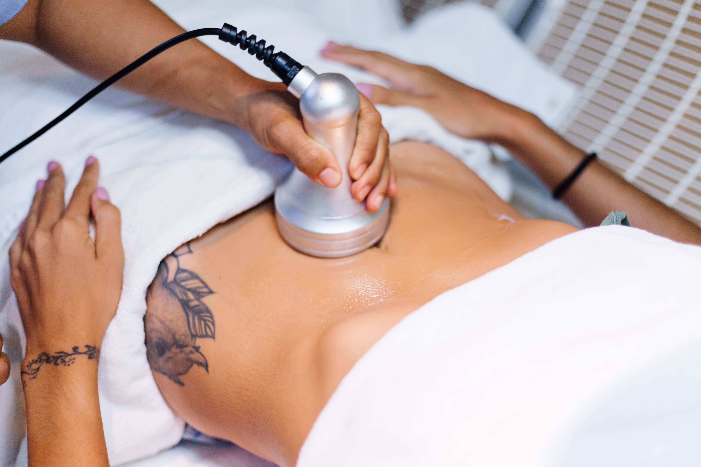

Depilação a cera: o que é
Quando o assunto é a remoção de pelos faciais ou corporais, podemos contar com diversos métodos disponíveis, entre eles a depilação com cera, um dos mais utilizados, principalmente pelas mulheres. 
A depilação com cera é um procedimento que consiste em arrancar os pelos desde a raiz utilizando algum tipo de cera, que pode ser quente ou fria, isso irá depender da preferência da pessoa e da região a ser depilada.
É importante deixar claro de início, que esse método de depilação não é definitivo, ou seja, ele precisa ser feito regularmente. Contudo, a duração da depilação com cera é bem maior do que a com lâmina ou creme depilatorio, por exemplo. Quanto às ceras, elas podem ser:
- Cera quente : é indicada para as regiões pequenas do corpo ou com pelos mais espessos, como as axilas ou virilhas, por exemplo.
Devido à temperatura quente, ela ajuda a dilatar os poros, facilitando assim a remoção dos pelos e diminuindo a dor durante o,
processo de remoção dos pelos. - Cera fria: ser a mais indicada para pessoas com varizes, por não promover a dilatação dos vasos sanguíneos.
Ela é mais indicada para depilar regiões maiores ou com pelos mais finos, como costas ou braços, por exemplo.
Você também pode optar por fazer uma cera caseira, que também é bastante eficaz na remoção dos pelos. .
Quais os beneficios de depilar com a cera
Dentre todas as opções de métodos depilatórios existentes, a depilação com cera é uma das mais populares e mais utilizadas, principalmente pelas mulheres. Confira a seguir os principais benefícios de se depilar com cera.
Diferente da depilação com lâmina, por exemplo, que deixa a pele áspera e ressecada por cortar o pelo pela metade, a depilação com cera proporciona um toque mais suave na pele, pois elimina os pelos de maneira uniforme e desde a raiz.
Além disso, no processo de depilação com cera, algumas células mortas da pele aderem à cera e são removidas juntamente aos pelos, fazendo uma espécie de esfoliação corporal.
Este é o principal ponto que faz com que esse método de depilação seja tão popular. A cera, seja ela quente ou fria, faz a remoção dos fios desde a sua raiz. Dessa forma, isso prolonga o efeito da depilação e faz com que ela dure cerca de 20 a 25 dias.
Vale lembrar que para isso acontecer, é importante utilizar somente este método de depilação, seja com a cera quente ou fria, e não utilizar a lâmina de forma alternada para a remoção dos pelos.
Esse tipo de depilação pode ser feita em todas as partes do corpo?
Sim, a depilação com cera pode ser utilizada em todas as partes do corpo: rosto, braços, pernas, peitoral, costas, região íntima e axilas. Contudo, não é indicado realizar o procedimento em casos de lesão na pele ou sensibilidade. O ideal é consultar sempre um (a) profissional antes de realizar a técnica!